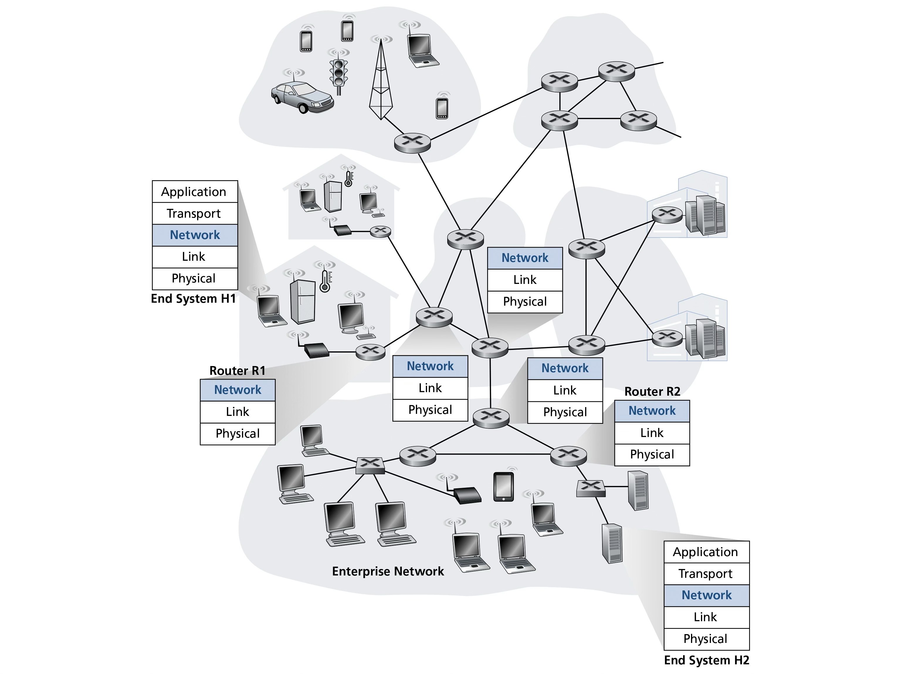
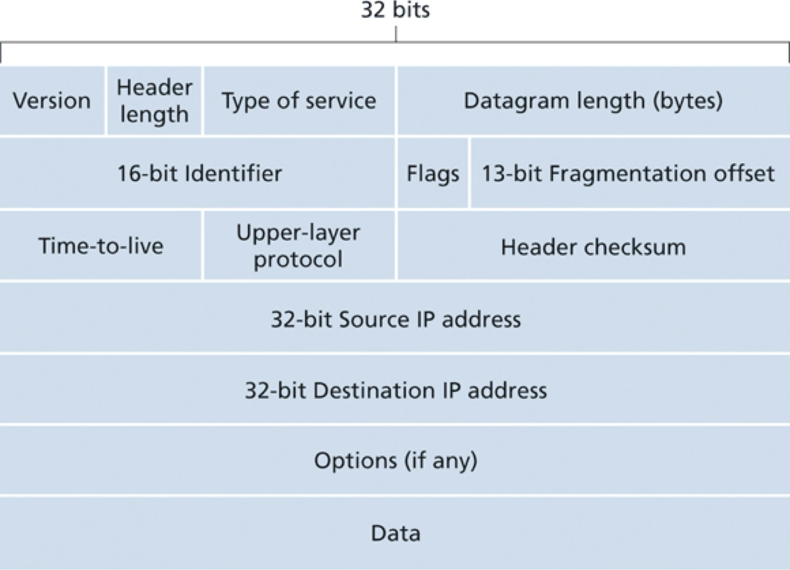
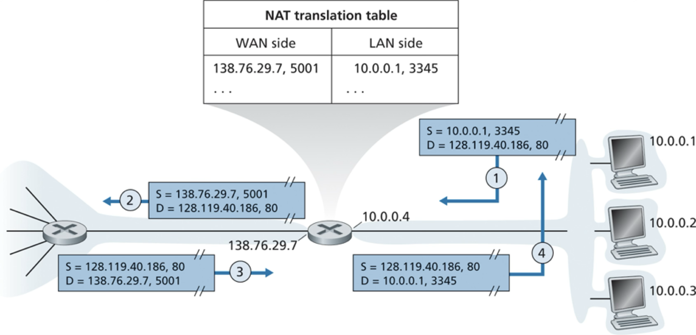
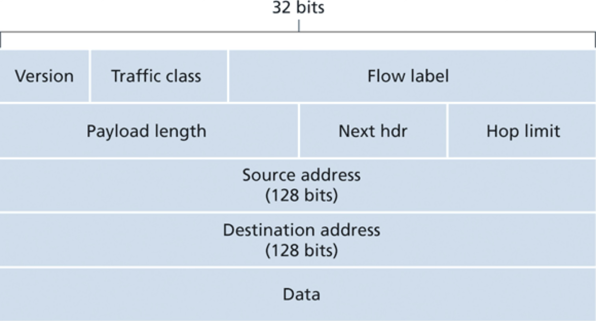
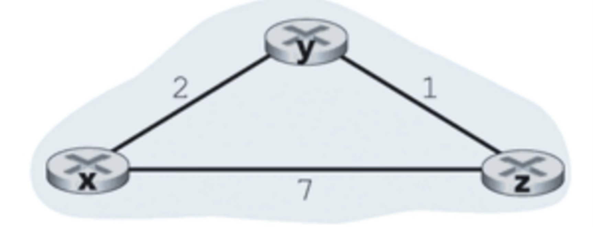

Recommended reading: Kurose chapters 4 and 5
The network layer moves datagrams from the sending host to the receiving host via intermediate routers.

Recall:
Forwarding = packet-switch moves a datagram from the incoming link to an appropriate outgoing link
Example forwarding table:

Consider the network below.

Consider a datagram network using 8-bit host addresses. Suppose a router uses longest prefix matching and has the following forwarding table:
| Prefix Match | Interface |
|---|---|
| 1 | 0 |
| 10 | 1 |
| 111 | 2 |
| otherwise | 3 |
For each of the four interfaces, give the associated range of destination host addresses and the number of addresses in the range.


How does IPv4 ensure that a datagram is forwarded through no more than N routers?
Suppose Host A sends Host B a TCP segment encapsulated in an IP datagram. When Host B receives the datagram, how does its network layer know it should pass the segment (i.e. the payload of the datagram) to TCP rather than to UDP or some other transport-layer protocol?
Suppose an application generates chunks of 40 bytes of data every 30 msec, and each chunk is sent over the network via TCP and IPv4. What percentage of each network-layer datagram will be overhead (i.e. protocol headers)?
Example: one router interconnecting 7 hosts

Example NAT: 
Consider a subnet with prefix 128.119.40.128/26. Give an example of one IP address (of form xxx.xxx.xxx.xxx) that can be assigned to this network. Suppose an ISP owns the block of addresses of the form 128.119.40.64/26. Suppose it wants to create four subnets from this block, with each block having the same number of IP addresses. What are the prefixes (of form a.b.c.d/x) for the four subnets?


Recall:
Routing = Determine good end-to-end paths and update router-local forwarding tables.
Example routers graph:

Djikstra dry-run for the following example graph using source node
Start with source node and its distance to its neighbors.
Pick closest node not in
For each neighbor
Pick closest node not in
For each neighbor
Pick closest node not in
Pick closest node not in
Pick closest node not in
A slight enhancement to the above algorithm allows for tracking the previous node in the shortest path to a node, which in turn determines the shortest-path to each node from a single source node.
True or false: When an OSPF route sends its link state information, it is sent only to the directly attached neighbors. Explain.
Consider the following network. With the indicated link costs, uses Djikstra's shortes-path algorithm to compute the shortest path from
Example network of gateway routers:

Example dry run:
Each node initializes a vector of distances to all nodes
Every time a node's distance vector changes, it sends it to all its immediate neighbors.
Continue until the state converges in every node and the nodes stop sending updates.
Consider the network shown below, and assume that each node initially knows the costs to each of its neighbors. Consider the distance-vector algorithm.

What is the initial distance vector at
What is the updated distance vector at
What is the updated distance vector at